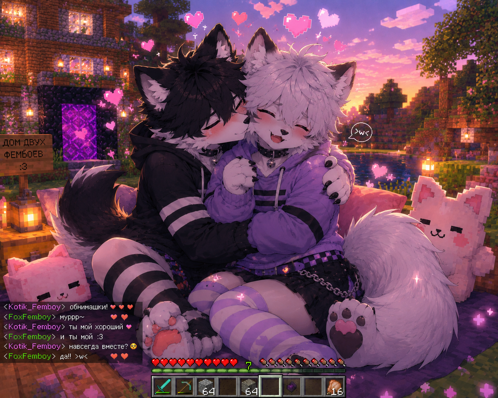
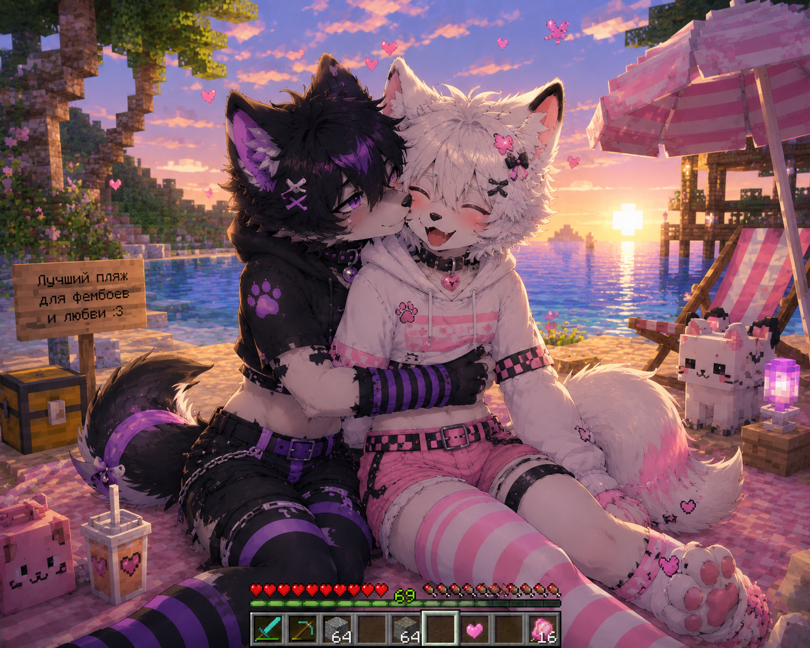

Самый уютный и пушистый Minecraft сервер для фурри и друзей ♡
play.samolensk.ru

FurryCraft — это уютный Minecraft сервер, где каждый найдёт себе место! Здесь мы строим, исследуем и просто наслаждаемся компанией пушистых друзей 🐾
Сервер работает на Fabric 1.20.1 с оптимизациями для максимально плавного геймплея. У нас есть голосовой чат, защита от читеров и система авторизации. Всё для того, чтобы ты чувствовал себя как дома~ >w<
Всё для комфортной и безопасной игры на нашем пушистом сервере~
Общайся с друзьями голосом прямо в игре! Разговаривай с теми, кто рядом, или создавай группы для приватных бесед~ 🐾
Защита от X-Ray читов. Никто не сможет подглядывать за твоими алмазами! Все ресурсы честно добыты лапками ♡
Система авторизации для защиты твоего аккаунта. Зарегистрируйся один раз и играй спокойно! Никто не украдёт твой домик >w<
Глубокая оптимизация сервера для максимальной производительности. Никаких лагов — только плавный геймплей!
Снижает потребление оперативной памяти сервера. Больше памяти = больше возможностей для наших приключений~
Оптимизация сетевого стека Minecraft. Стабильное соединение даже при слабом интернете. Пинг — наш друг!
Система логирования действий. Если кто-то сломает твой домик — мы узнаем кто! Справедливость для всех 🐾
Прегенерация мира для мгновенной загрузки чанков. Исследуй мир без задержек — всё уже готово для тебя!
Простая инструкция, чтобы начать играть с нами! Всего несколько шагов~
Наш сервер работает на Java Edition. Убедись, что у тебя установлена лицензионная версия игры или используй лаунчер, поддерживающий Fabric.
Скачай и установи Fabric Loader для версии 1.20.1.
Это нужно для работы модов на сервере.
Для голосового чата тебе нужен мод Simple Voice Chat на клиенте. Без него играть можно, но общаться голосом — нет!
🎤 Скачать Simple Voice Chat для Fabric 1.20.1 →Также рекомендуем поставить Fabric API — он нужен для работы большинства модов.
⚙️ Скачать Fabric API →Открой Minecraft, перейди в «Multiplayer» → «Add Server» и введи адрес сервера:
play.samolensk.ru
При первом входе сервер попросит тебя зарегистрироваться через EasyAuth. Просто введи команду в чат:
/register пароль пароль
При следующих входах используй: /login пароль
Готово! Ты на сервере. Строй, исследуй и общайся с пушистыми друзьями~ Добро пожаловать в семью! >w<
На нашем сервере установлен мод Simple Voice Chat, который позволяет общаться голосом прямо в игре!
Слышишь друзей тем громче, чем они ближе к тебе — как в реальной жизни~ 🐾
⚠️ Для работы голосового чата тебе нужно установить мод Simple Voice Chat на свой клиент! Без клиентского мода ты сможешь играть, но голосовой чат работать не будет.
📥 Скачать мод для Fabric 1.20.1